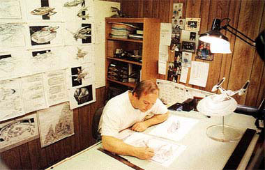
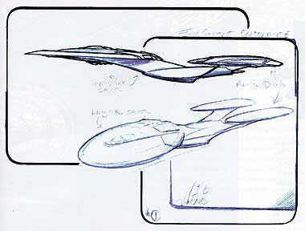
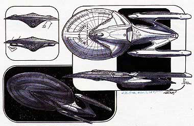
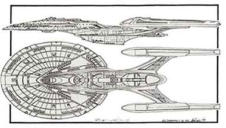
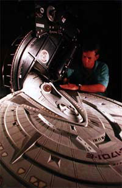
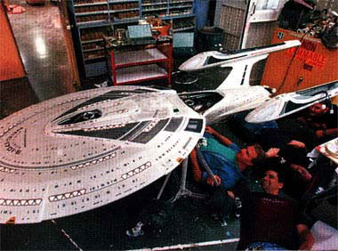
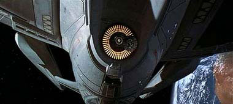
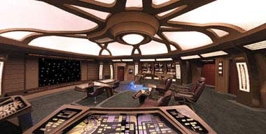
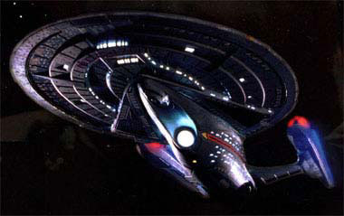

|

Publicado originalmente
em 6 de maio de 2002
Criando a 5ª letra
do alfabeto
Conheça a gênese da última
Enterprise da tela do cinema

| No século 24... |
| O
trabalho no prottipo da USS Sovereign ("Soberana", em portugus)
comeou em 2365. Com o primeiro encontro da Federao com os Borgs,
ocorrido ao final daquele ano ("Q Who?"), a Frota Estelar resolveu
modificar os planos e criar a classe Sovereign como uma grande nave
de batalha que pudesse confrontar inimigos como os Borgs. Aps a batalha de Wolf 359 ("The Best of Both Worlds, Part II"), a Federao redirecionou seu foco para a construo de naves de guerra, entre elas as do projeto Defiant. O Bureau para o Desenvolvimento de Naves fez um grande nmero de recomendaes para atualizao da capacidade estratgica e ttica da Frota Estelar, sendo que muitos desses novos conceitos foram utilizados na nova classe Sovereign. A USS Sovereign NCC 75000 foi comissionada em 2369, e a USS Enterprise NCC 1701-E foi lanada dois anos depois, em 2371, com o capito Jean-Luc Picard no comando. Em 2368 a Frota Estelar descobriu que o sistema de dobra danificava certas reas do espao. Uma soluo na poca foi limitar a velocidade das naves para dobra 5. Apenas em situaes emergenciais uma velocidade mais alta seria permitida. Na classe Sovereign o sistema de dobra foi modificado para no mais danificar o espao, e esse padro o atual entre as naves da Frota Estelar. Com uma perfeita harmonia entre explorao, combate e misses de suporte, a classe Sovereign dever ser o principal instrumento da Federao e da Frota Estelar para o incio do sculo 25. |
|
Planejada
originalmente para ser a ltima cena do ltimo episdio da sexta
temporada de A Nova Gerao, a destruio
da USS Enterprise-D teve de esperar at que a srie saltasse da
tela da TV para o cinema. A explicao? Falta de recursos para
faz-la convincente aos olhos do pblico, j que o oramento do
episdio final da temporada (que no seria "Descent", nesse
caso) no permitiria a Ron Moore, Brannon Braga e Jeri Taylor
destruir a nave capitnea da Frota de maneira adequada.  O contratado para criar uma nova Enterprise para "Jornada nas Estrelas: Primeiro Contato" foi John Eaves, o mesmo artista que, anos depois, criaria a Enterprise NX-01 de Archer. "Em setembro de 1995, quando eu estava no departamento de arte de DS9, o designer da produo Herman Zimmerman chegou em minha mesa e disse que em janeiro comearia a produo do novo filme da Nova Gerao, 'Jornada nas Estrelas: Ressureio' [posteriormente modificado para 'Primeiro Contato']", diz John Eaves. "Herman disse que, claro, haveria uma nova Enterprise e que se eu tivesse alguma idia em mente e quisesse apresent-la, que comeasse a fazer alguns rascunhos. Puxa, a Enterprise sempre foi minha nave favorita de todos os filmes e sries de fico cientfica! Desde que eu me lembro, sempre tive modelos das naves de Jornada perduradas em minha sala. Quando criana, eu desenhava a Enterprise em minhas batalhas pessoais e em descobrimento de novos mundos", continua. "Minha infncia inteira girava em torno dessa nave e agora, muitos anos depois, eu tinha a oportunidade de criar a Enterprise-E. Fiquei maravilhado com a oportunidade."  No comeo, Eaves desenhou mais de cem rascunhos da nave. Porm a utilizao da Enterprise-D como ponto de partida trouxe algumas complicaes, pois o modelo da nave usada na srie era de fato muito difcil para fotografar, logo, no serviria para o cinema. Os produtores estavam certos. John desenhou ento uma Enterprise mais estreita, porm com naceles curtas, como as da Enterprise-D. Michael Okuda e Herman Zimmerman gostaram da idia, mas pediram que ele trabalhasse com naceles mais compridas. Lembrando que em "Jornada nas Estrelas II: A Ira de Khan", na batalha com a USS Reliant, o pescoo da Enterprise clssica, que liga o disco ao casco secundrio, foi atingido e que aquele era sem dvida um alvo em potencial, Eaves retirou o pescoo e ligou as duas sees da nave de modo com que um ataque inimigo no pudesse separar o disco do casco secundrio. "Meus desenhos refletem o que tnhamos em mente para a nova Enterprise", diz John. "Ela no seria classificada como uma nave que transporta famlias, e sim como uma nave de batalha, pronta para combater os Borgs", completa o designer.  Ao mostrar para um amigo como estava ficando a nave, Eaves recebeu um comentrio inesperado. "Est parecido com um peru de Dia de Ao de Graas", teria dito ele. De fato, a forma com que Eaves colocou as naceles lembravam as asas de um peru. Aps efetuar a mudana das naceles, Eaves acreditou que havia conseguido harmonia entre os elementos da nave e mostrou para Rick Berman, que aprovou o design. O prximo passo era definir a textura externa e fazer as plantas para construo do modelo, algo que ficou a cargo do veterano designer de Jornada, Rick Sternbach.   Em janeiro de 1996 o modelo comeou a ser construdo, e alguns pequenos detalhes do desenho final de John Eaves tiveram de ser adaptados. Sternbach deixou a nave com 24 decks, sendo a engenharia principal nos decks 15 e 16. Eaves conta que colocou detalhes pessoais na nave. "A Enterprise-E est coberta de pequenos elementos que refletem pessoas que conheo. Por exemplo, as duas naceles idnticas representam minhas duas filhas gmeas, Olivia e Alicia. Mike e Denise Okuda esto representados pela forma de ponta de flecha na parte de cima e de baixo do disco. Os dois desenhos triangulares abaixo do disco so em homenagem a Matt Jefferies, o criador da Enterprise original, e por a vai...", conta o designer. Quanto estreou em "Primeiro Contato", a USS Enterprise-E foi muito bem recebida pelo pblico e principalmente pelos fs. E desde o famoso passeio na doca espacial que Scotty proporcionou ao almirante Kirk em "Jornada nas Estrelas: O Filme", no tnhamos a possibilidade de ver os detalhes externos de uma nave de Jornada com tanta clareza. Em "Primeiro Contato", com a "excurso" que Picard, Worf e Hawk fazem, andando pelo casco da nave para deter os Borgs que encontravam-se no escudo defletor, a chance de conhecer detalhes da nova Enterprise foi dada ao pblico.  Em "Insurreio", o penltimo filme da série para o cinema, conhecemos mais detalhes da nave, como a possibilidade de as naceles acumularem gases para algum fim. O iate do capito foi finalmente mostrado e at um infame joystick na ponte foi utilizado por Riker.  A ponte chegou a ter um detalhe significativo alterado de "Primeiro Contato" para "Insurreio". Enquanto no primeiro filme a tela principal tinha um novo conceito --era virtual, s aparecendo quando requisitada--, no segundo filme voltou-se ao conceito tradicional, com uma tela fsica, que est l o tempo todo mostrando alguma coisa. Todo f de Jornada que se preza adora as informaes histricas das naves e dos personagens das sries. Muitas vezes eles no so ditos ou mostrados em episdios ou filmes, mas os manuais tcnicos lanados pela editora Pocket Books fazem essa parte. A Pocket uma empresa ligada Paramount. Logo, as informaes extradas de seus livros tcnicos so consideradas praticamente cannicas, ou seja, tm seu valor reconhecido como verdadeiro no universo "oficial" da srie. Confira a tabela ao lado!  Fernando Penteriche é editor do Trek Brasilis. |